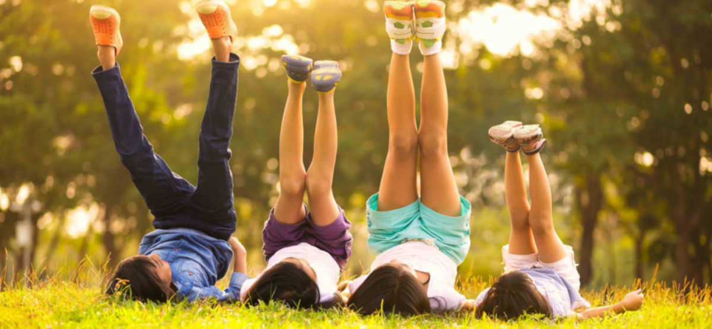

Lochquarry Outdoor Centre
Our activities are very popular with youth groups including Scouts and Guides.
Each activity is run under the instruction of one of our highly trained staff and all safety equipment is provided.
Water Based Activities
Water-based activities all take place on Lochquarry itself.
Kayaking
Have a go at paddling, rolling and rafting in one of our brand new kayaks. Max group size 8. Ages 8+
Canoeing
Work single-handedly or in pairs to canoe the length of Lochquarry. You can even take a picnic with you and explore some of the Loch's islands. Max group size 8 boats (up to 16 people). Ages 6+
Powerboating
Take control of one of the Centre's two RIBs out on Lochquarry and try your hand powerboating. Max group size 6. Ages 12+
To book your next adventure at Lochquarry, please phone:
01475 229 8311